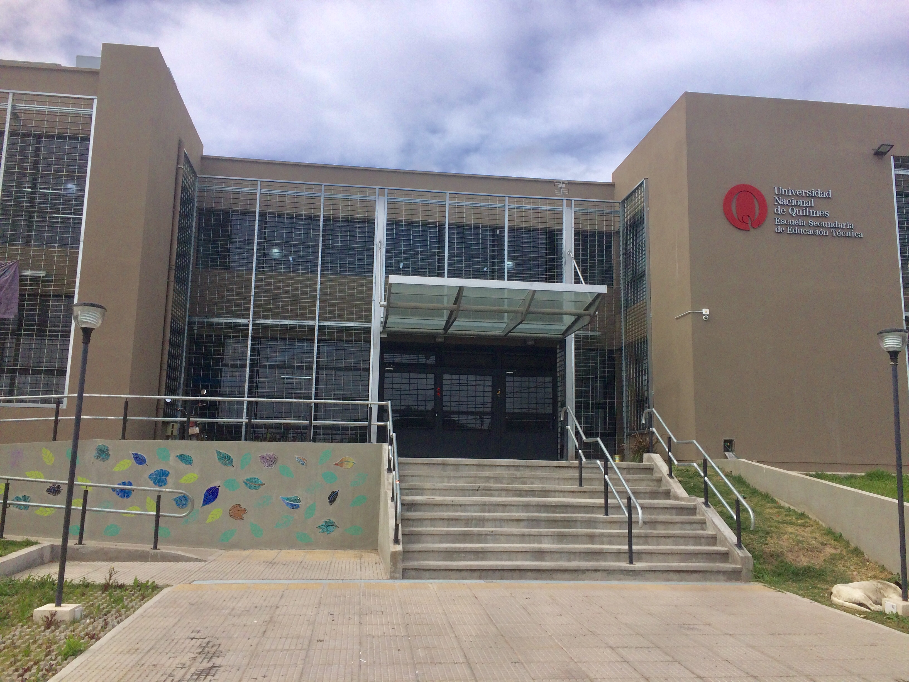
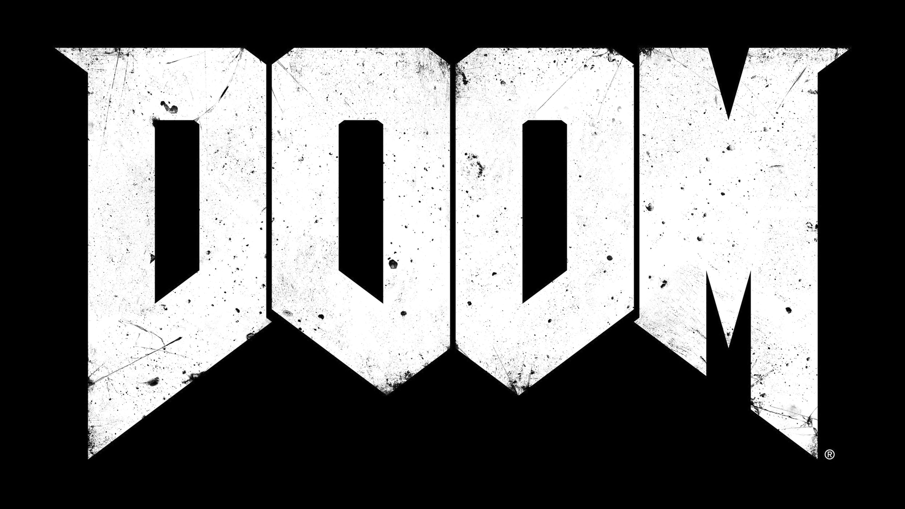

Desde su debut en 1993, DOOM revolucionó el mundo de los videojuegos y definió el género de los shooters en primera persona ($FPS$). Lo que comenzó como una batalla pixelada por la supervivencia en las lunas de Marte se ha convertido en una de las franquicias más icónicas, veloces y brutales de la historia del gaming.
DOOM no solo fue un juego divertido; fue un terremoto tecnológico y cultural. Su lanzamiento en los años 90 transformó las computadoras de oficina en máquinas de entretenimiento y obligó a la industria a evolucionar a pasos agigantados.
El Nacimiento del "Deathmatch": DOOM acuñó el término y popularizó las partidas multijugador competitivas, sentando las bases de los eSports actuales.
Música que Hace Historia: La banda sonora original, fuertemente inspirada en bandas de metal como Pantera, Metallica y Slayer, redefinió cómo debía sonar la acción en un videojuego.
Pionero de los Mods: Al permitir que los usuarios crearan sus propios niveles (archivos .WAD), inauguró una de las comunidades de creadores más longevas y activas de internet.